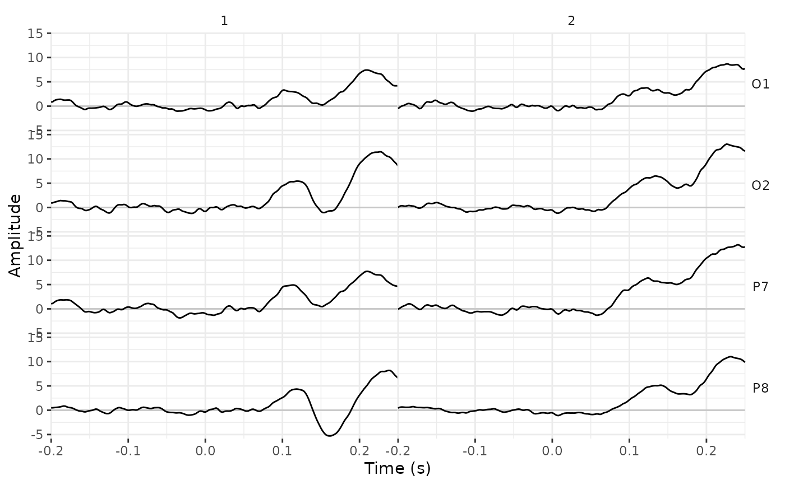
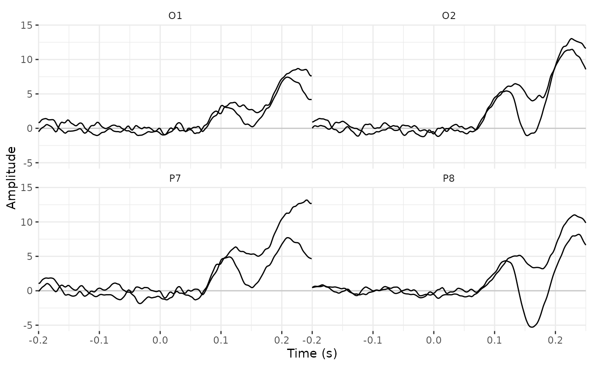

R/filters.R
filt.RdApply a low-pass, high-pass, band-pass, or band-stop filter to every segment of an eeg_lst. These filters are adapted from the FIR and IIR filters in MNE package (v 0.0.17.1) of python. For background information about the FIR vs IIR filters, see here. IIR filters are still on an experimental phase.
eeg_filt_low_pass(.data, ..., .freq = NULL, .config = list(), na.rm = FALSE)
eeg_filt_high_pass(.data, ..., .freq = NULL, .config = list(), na.rm = FALSE)
eeg_filt_band_pass(.data, ..., .freq = NULL, .config = list(), na.rm = FALSE)
eeg_filt_band_stop(.data, ..., .freq = NULL, .config = list(), na.rm = FALSE)A channel or an eeg_lst.
Channels to apply the filters to. All the channels by default.
A single cut frequency for eeg_filt_low_pass and eeg_filt_high_pass, two edges for eeg_filt_band_pass and eeg_filt_band_stop.
Other parameters passed in a list to configure the filters. See details for options.
=TRUE will set to NA the entire segment that contains an NA, otherwise the filter will stop with an error.
A channel or an eeg_lst.
eeg_filt_low_pass() Low-pass or high-cut filter.
eeg_filt_high_pass() High-pass or low-cut filter.
eeg_filt_band_pass() Band-pass filter.
eeg_filt_band_stop() Band-stop filter.
After setting a filter method. The filters can be configured passing a list to the argument .config.
Using method ="fir", we define a zero-phase filter of the FIR (finite impulse response) class (MNE v 0.0.17.1 default); these are the options:
l_trans_bandwidth = "auto" by default. This is min(max(l_freq * 0.25, 2), l_freq), where l_freq is the freq of the high pass filter, or freq[1] of a band pass/stop filter.
h_trans_bandwidth = "auto" by default. This is min(max(0.25 * h_freq, 2.), sampling_rate / 2. - h_freq) where h_freq is the freq of the low pass filter, or freq[2] of a band pass/stop filter.
Using method = "iir", we define a zero-phase (two-pass forward and reverse) non-causal IIR filter. Filter type is Butterworth by default, and either order (default) or maximum loss and attenuation (gpass and gstop) should be specified:
type = "butter" for Butterworth by default, other options are "cheby1", or "cheby2" for Chebyshev type I or type II, or "ellip" for Elliptic.
order = 6 by default for low and high pass, and 4 by default for band pass and stop filters (this follows the defaults of Fieldtrip matlab package). Notice that the effective order after forward-backward pass is multiplied by two.
gpass : The maximum loss in the passband (dB).
gstop : The minimum attenuation in the stopband (dB).
Other preprocessing functions:
eeg_baseline(),
eeg_downsample(),
eeg_ica_keep(),
eeg_ica(),
eeg_rereference(),
eeg_segment()
library(dplyr)
library(ggplot2)
data("data_faces_ERPs")
data_ERPs_filtered <- data_faces_ERPs %>%
eeg_filt_low_pass(.freq = 1)
#> Setting up low-pass filter at 1 Hz
#> Width of the transition band at the high cut-off frequency is 2 Hz
# Compare the ERPs
data_faces_ERPs %>%
eeg_select(O1, O2, P7, P8) %>%
plot() +
facet_wrap(~.key)

data_ERPs_filtered %>%
eeg_select(O1, O2, P7, P8) %>%
plot() +
facet_wrap(~.key)
